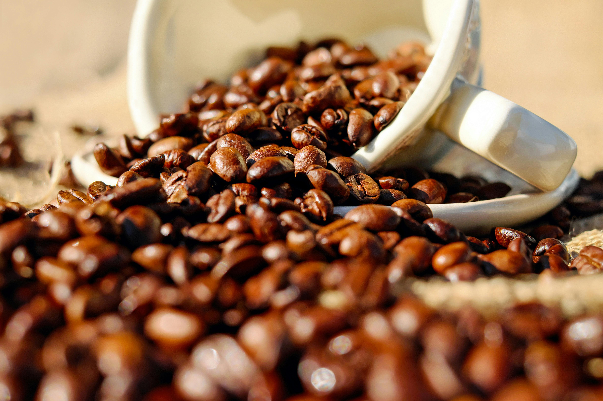
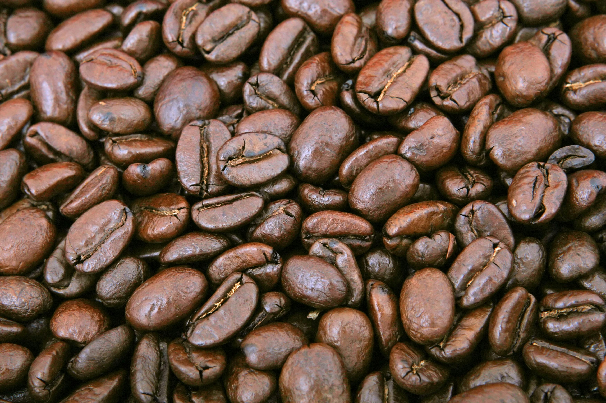
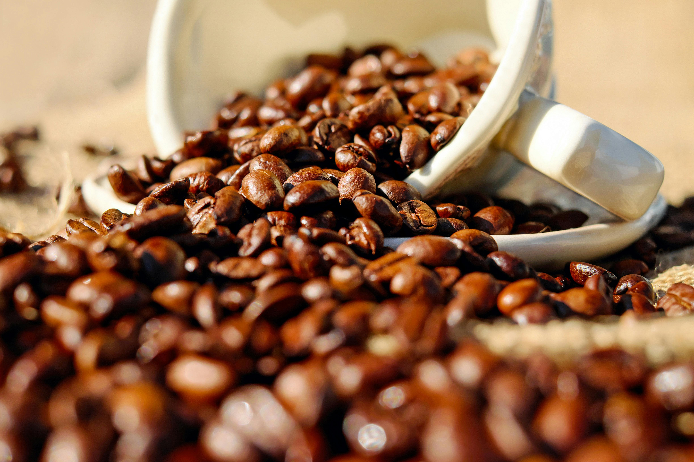
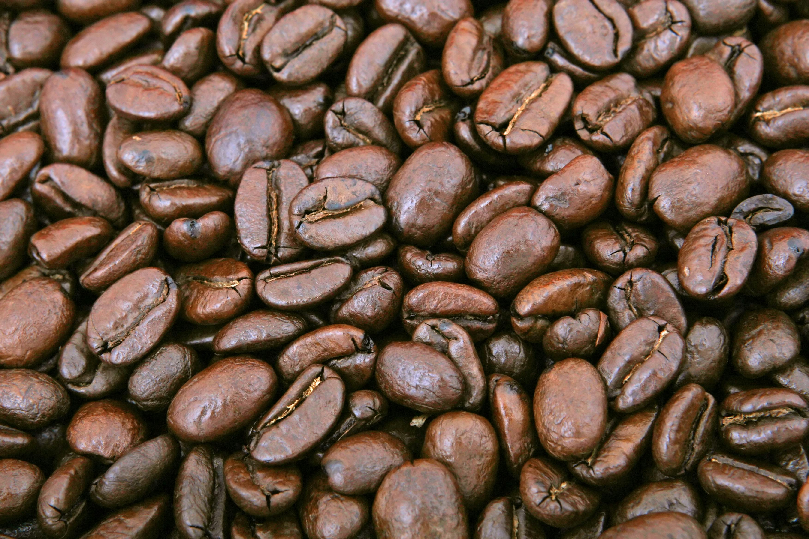

About Kimani Coffee Experts
The founder of Kimani Coffee Experts Limited is Samuel Mwithukia Kimani, a certified coffee expert. He worked with international coffee companies for close to 28 years in charge of quality.
He took early retirement in 2012 to found Kimani Coffee Experts Ltd, incorporated in May 2013. On 4th December 2013, the company was issued with a coffee trading licence by the Coffee Board of Kenya.
Since then, Kimani Coffee Experts Ltd has been buying, processing, and selling coffee. In 2013, the company bought 2000 bags of coffee from farmers and sold them to local and international buyers.
In 2013, the company engaged the services of two coffee graduates from Kimathi University: Mr. Joseph Wanjau (Sample Room) and Mr. John J. Kimani (Assistant Sample Attendant).
We may be small, but we are a great coffee team.


 


